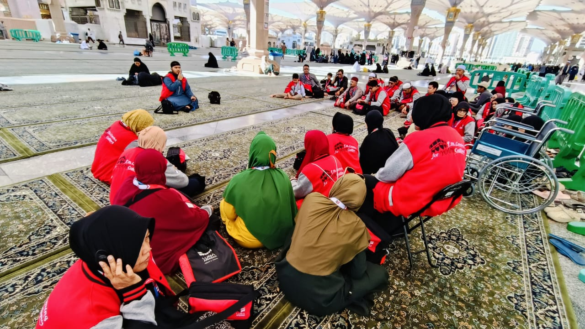
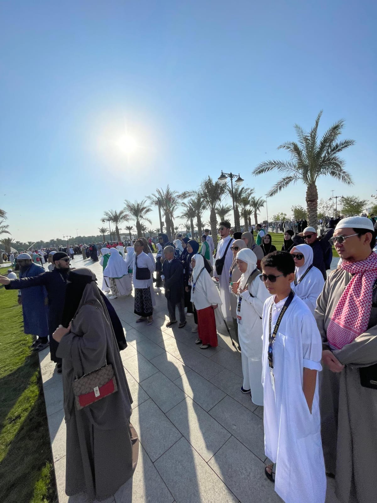

Apa Itu Haji?
Haji adalah rukun Islam kelima yang wajib dilaksanakan oleh setiap Muslim sekali seumur hidup bagi yang mampu secara fisik, finansial, dan mental.
- Waktu: Dilaksanakan hanya pada bulan Dzulhijjah
- Rukun: Niat ihram, wukuf di Arafah, tawaf, sa’i, tahallul, dan tertib
- Syarat Wajib: Islam, baligh, berakal, merdeka, dan mampu

Apa Itu Umroh?
Umroh adalah ibadah ke Baitullah yang bisa dilaksanakan kapan saja, dengan tata cara lebih ringan dari haji namun penuh keutamaan.
- Rukun: Niat ihram, tawaf, sa’i, dan tahallul
- Keutamaan: Menghapus dosa-dosa dan meningkatkan spiritualitas
- Waktu: Sepanjang tahun kecuali pada hari-hari haji
.jpg)
Apa Itu Badal Umroh?
Badal Umroh adalah pelaksanaan ibadah umroh oleh seseorang untuk menggantikan orang lain yang tidak mampu melaksanakannya sendiri karena sakit permanen atau telah wafat.
- Syarat: Orang yang diwakilkan benar-benar tidak mampu melaksanakan umroh
- Pelaksana: Orang yang telah menunaikan umroh untuk dirinya sendiri terlebih dahulu
- Tujuan: Memberikan manfaat pahala dan keberkahan kepada yang diwakili
Kontak RAR | Haramain
Alamat: Jl. Haji & Umroh No.123, Jakarta
Email: info@rarharamain.com
Telepon/WA: +62 812 3456 7890